Color Theory for Visualization
DS-GA 3001 - Fall 2026
NYU Center for Data Science
2026-09-15
Color
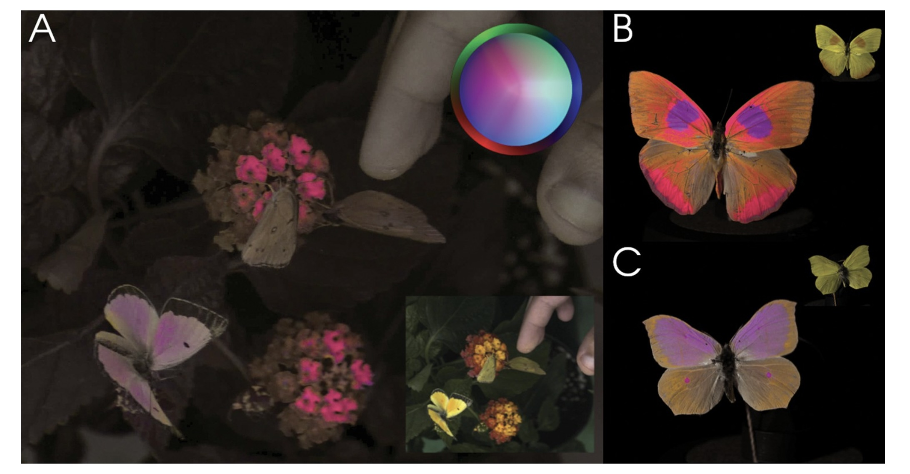
Vasas et al, PLOS Biology, 2024
Image from link
Visible Spectrum
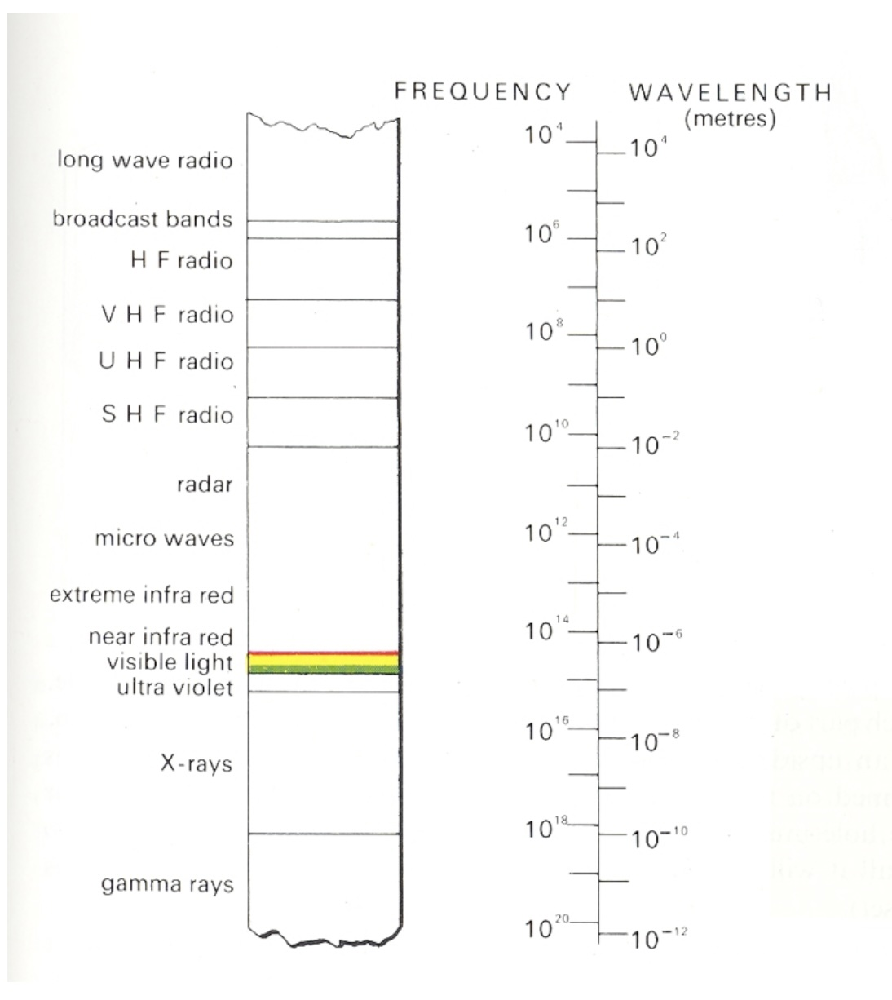
Light
Visible range: 390-700nm
Luminance has a large dynamic range:
– 0.00003 – Moonless overcast night sky
– 30 – Sky on overcast day
– 3000 – Sky on clear day
– 16,000 – Snowy ground in full sunlight
Colors result from spectral curves
– dominant wavelength, hue
– brightness, lightness
– purity, saturation
Physiology of the Eye
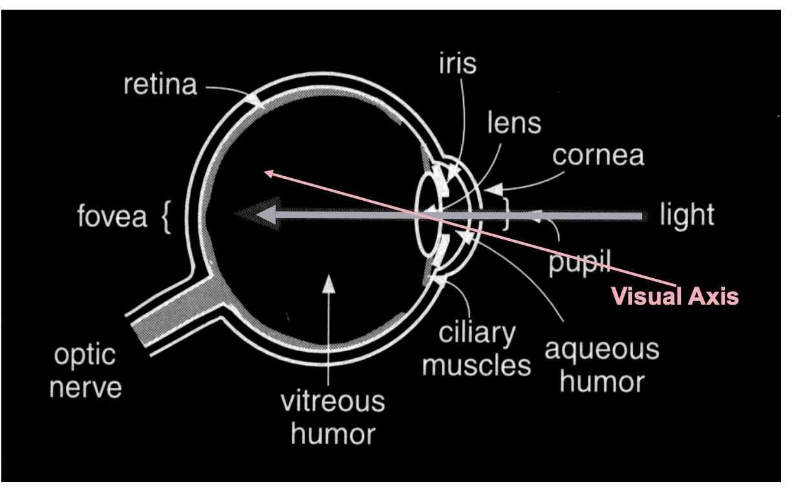
The Retina
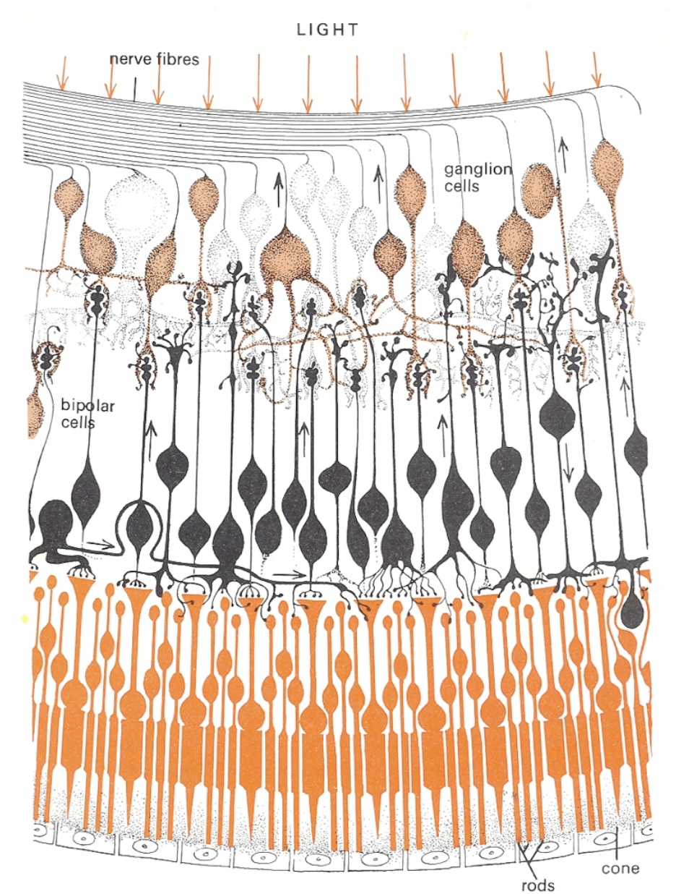
Photoreceptors
- Discrete sensors that measure energy – Adaptation
- Rods
- active at low light levels (scotopic vision)
- only one wavelength-sensitivity function
- Cones
- active at normal light levels (photopic)
- three types: sensitivity functions with different peaks
Cone Sensitivity
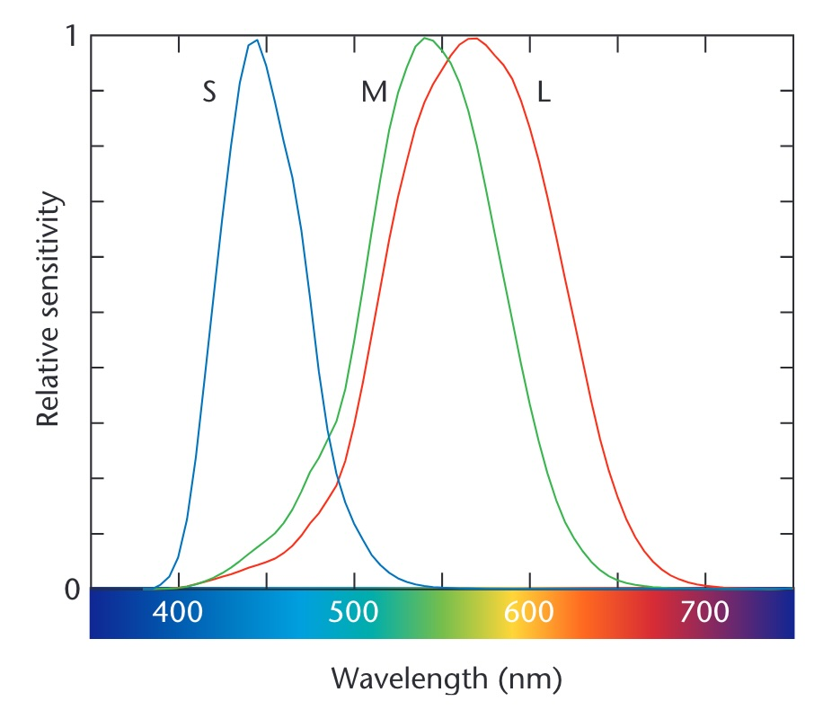
Image from link
Density of Cones
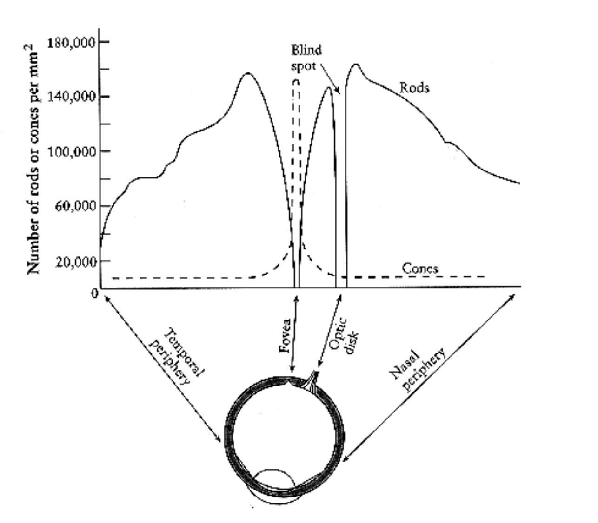
Cones and Rods
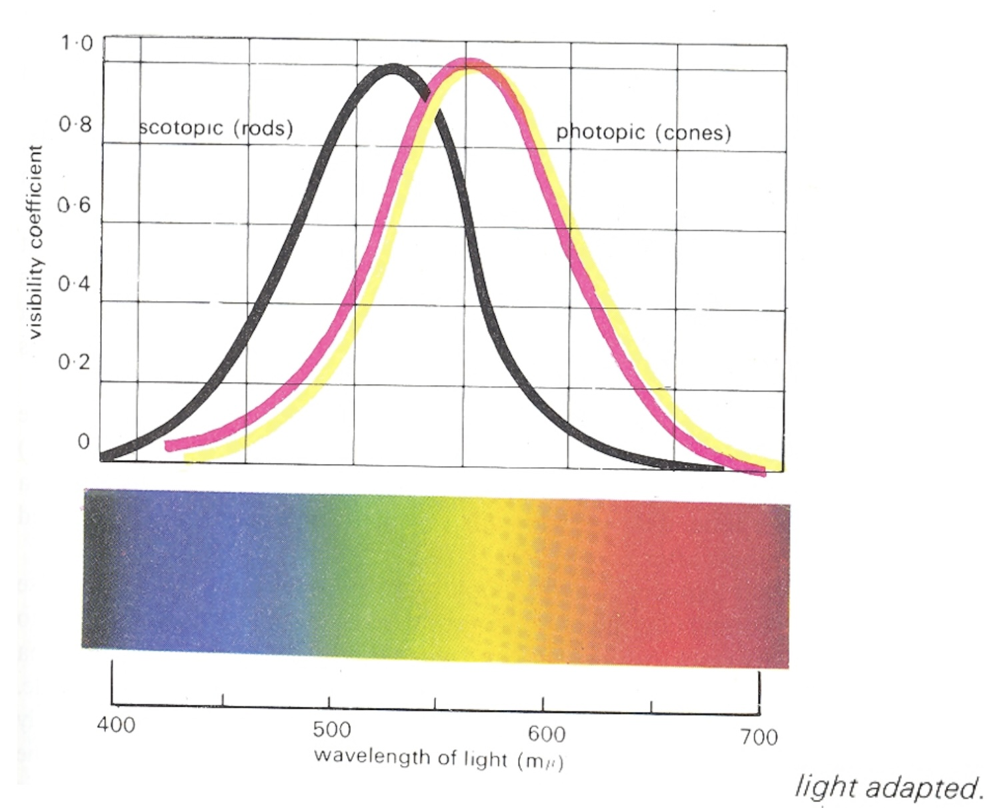
Color Stimulus
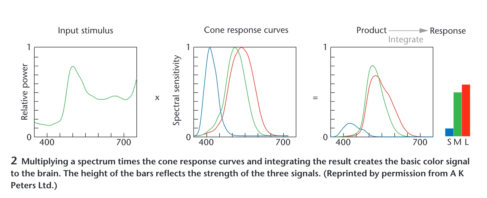
Color Matching Experiments
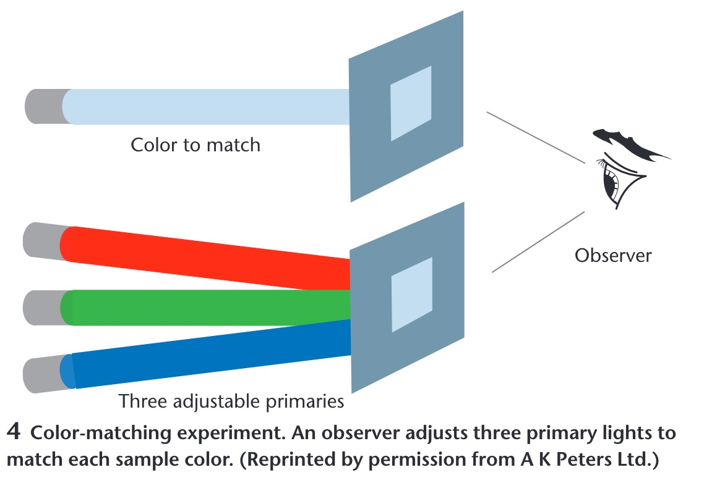
Opponent Process Theory
Three cone signals are re-coded into three opponent channels
Black ↔︎ White — luminance: L + M
Red ↔︎ Green — L - M
Blue ↔︎ Yellow — S - (L + M)
No “reddish green” or “bluish yellow”: each pair shares one channel
Afterimages appear in the opponent hue
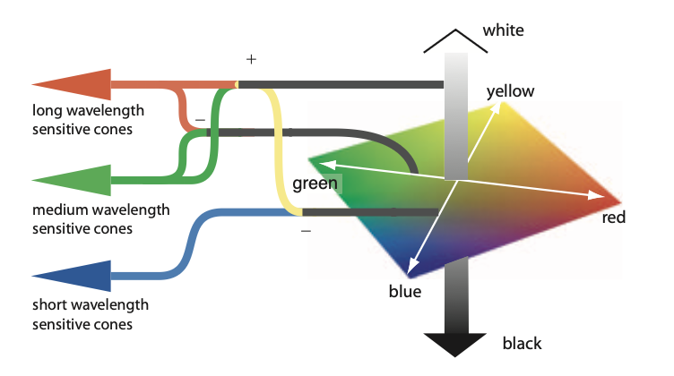
Hering, E. (1964). Outlines of a Theory of the Light Sense. Harvard University Press. (Original work published 1920); Hurvich, L. M., & Jameson, D. (1957). An opponent-process theory of color vision. Psychological Review, 64(6), 384-404.
Color in Visualization
Trichromacy: Humans perceive colors according to three channels
Most usable and useful way to describe colors (especially for visualization):
- Hue, Saturation, Luminance
Material from Enrico Bertini
How do we use color in visualization?
Quantify
Label
Material from Enrico Bertini
Quantify
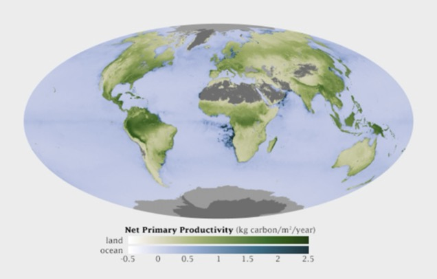
Material from Enrico Bertini
Label
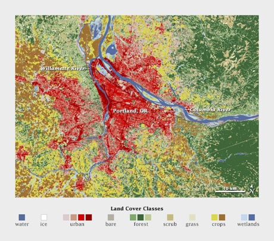
Material from Enrico Bertini
Quantitative Color Scales
- Desired Properties of Quantitative Color Scale:
- Uniformity (value difference = perceived difference)
- Discriminability (as many distinct values as possible)
Material from Enrico Bertini
Single Hue Sequential Scales
- Choose one hue
- Map value to luminance
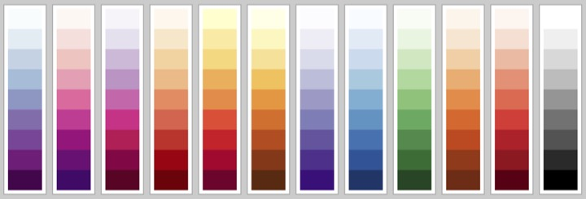
Material from Enrico Bertini
Categorical Color Scales
- Properties:
- Uniformity (uniform saliency / nothing stands out)
- Discriminability (as many distinct values as possible)
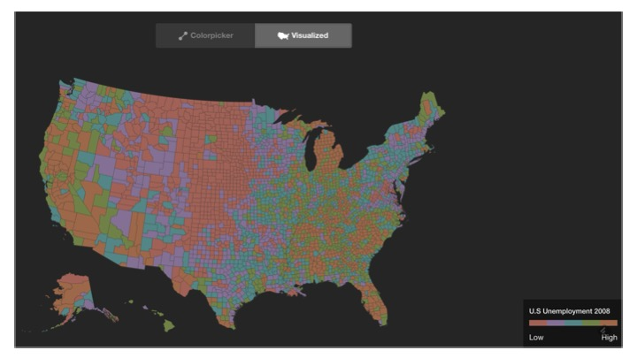
Material from Enrico Bertini
Categorical Color Scales
How many distinct values can one perceive?
how many can you use in a visualization?
Estimates are between 5-10 distinct codes.
Healey, Christopher G. “Choosing effective colours for data visualization.” Proceedings of IEEE Visualization’96, 1996.
Material from Enrico Bertini
Diverging Color Scales
- Sometimes useful/necessary to distinguish values above and below a threshold.
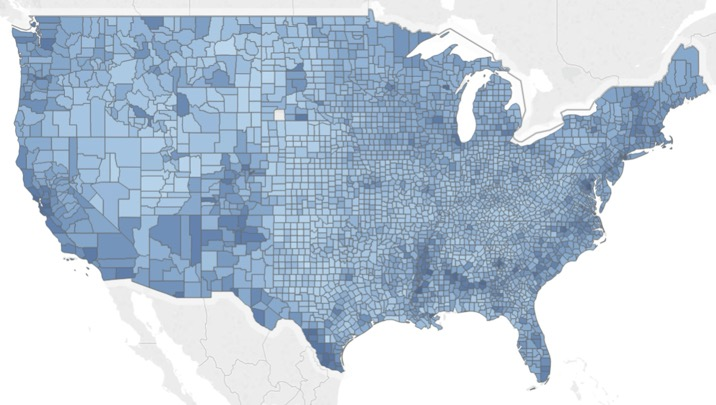
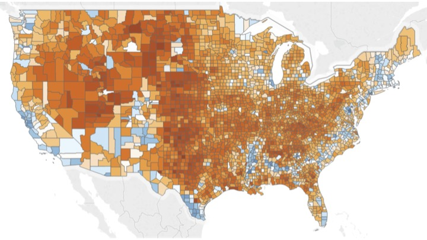
Created using these data: link
Material from Enrico Bertini
Color Blindness
- Missing or defective photoreceptors:
- 10% male and 1% female have some color deficiencies
Oliveira, Manuel. “Towards More Accessible Visualizations for Color-Vision-Deficient Individuals.” Comput. Sci. Eng., 2013.
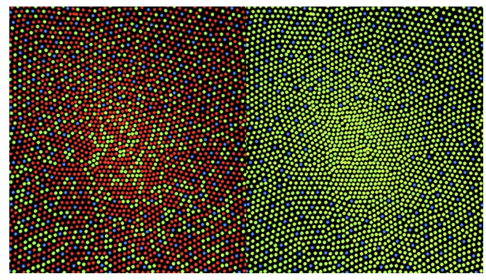
Material from Enrico Bertini